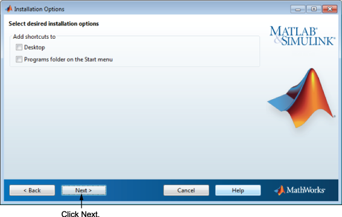

Specify Installation Options
You can specify several installation options, depending on which platform you are installing:
Windows
On Windows, the Installation Options dialog box lets you choose whether to put shortcuts for starting MATLAB® in the Start menu and on the desktop.
After selecting installation options, click Next to proceed with the installation.

Linux
On Linux systems, you can specify whether you want to create
symbolic links to the matlab and mex scripts.
Specify a folder to which you have write access and that is common
to all your user's paths, such as /usr/local/bin .
After selecting installation options, click Next to proceed with the installation.